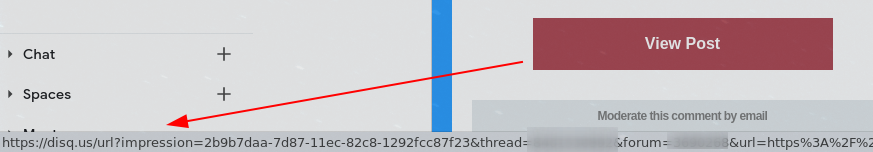

Disqus seems to have gone to shitter
Email notification links not working
Clicks from new comment notifications not taking me to the comment, but instead Disqus homepage (?!):
Signing in is not working
Privacy issues
The notification links seem to track my clicks:

Twitter login requests too many privileges:
Summary
All systems have problems from time to time, but the amount of issues indicate a systemic problem. Disqus is garbage.

Thanks for reading! 😍
If you like my writing, consider following me on Twitter.
Stay updated on my blog posts & projects - sign up for
my newsletter. 🚀
No spam, unsubscribe any time.
RSS also available.